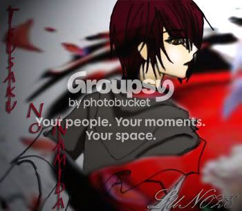

เปิดตอนด้วยภาพเผาๆ ของลูกชายสุดหล่อ ที่ถึงแม้จะเผาก็ยังหล่อ(เคลิ้ม) ลูจังงงงง >w<!!!! ลูนอร์ส ลูกชายสุดที่รัก
ตอนนี้ค่อนข้างเด่น แต่....เอ่อ ไปอ่านเองละกันน้า T T
Tsusaku No Namida
ปักษาแห่งพระผู้เป็นเจ้า ซึ่งไม่อาจขับขานบทเพลง
Part 6 เปิดม่าน บทกวีละเลงเลือด
“นี่...ตื่นได้แล้ว ได้เวลาทำงานของแกแล้ว”หญิงสาว ผมทวินเทล กล่าวกับเด็กหนุ่ม ตรงหน้า ดวงตาราวกับสัตว์ร้าย
“.....” เด็กหนุ่ม เงยหน้าขึ้นมา ดวงตานั้น แปรเปลี่ยน เป็นเฉยชา แตกต่างจากปกติ
“จัดการ พวกมันซะ….ลูนอร์ส”หญิงสาว เอ่ยสั่ง ออกมา หลังจากที่ได้ทำการ ควบคุมจิตใจ เด็กหนุ่มตรงหน้า
“ครับ”คำตอบรับสั้นๆ ถูกเอ่ยออกมา ก่อนที่เจ้าตัวจะหยิบอาวุธของตนขึ้น เดินจากไป
…………….
“หึหึ...คราวนี้แหละ พวกแกจะได้หายไปซักที”หญิงสาว ยิ้มออกมา ก่อนที่จะเดินกลับไปอีกทาง
++++++++++++++++
++++++++++++++++++++++
“อ้าว ลูนอร์สซัง เพิ่งทำภารกิจมาเหรอครับ?”รุ่นน้องคนหนึ่งเดินมาพบกับลูนอร์ส จึงทักทายตามปกติ
“........” ร่างนั้น มองกลับมา
//แกร็ก// ปากกระบอกปืนคู่ ข้างซ้าย ถูกยกขึ้นมา จ่อที่ใบหน้าของรุ่นน้องผู้นั้น
“อะ...เอ๋ ลูนอร์สซัง เล่นอะ..”
//ปัง!!//สิ้นเสียงนั้น ร่างของรุ่นน้องคนนั้น ก็ล้มลง รอยเลือด กระเด็นเปรอะเปื้อนสถานที่นั้น ท่ามกลางผู้คนในองกรณ์มากมาย
“กรี๊ดดดดดดดดดดดดดดด!!”
“ลูนอร์สซัง!!! เดี๋ยวก่อน!!” ชิโอะ ที่อยู่ในที่นั้น ร้องเรียก ก่อนจะพุ่งตัวเข้าชาร์ต ลูนอร์สทันที
//หมับ! โครมมมม!!//แต่แล้วก็ โดน ลูนอร์ส คว้าคอเสื้อเชิ้ต เหวี่ยง กระเด็นไปอีกมุมห้อง
“อั่ก!.. อะไรกัน”สายตาของชิโอะ พลันไปเห็น หญิงสาว ที่เดินมาข้างหลังลูนอร์ส รอยยิ้มนั้น ราวกับปีศาจเลยทีเดียว
“เลือด สีแดง...สวยดีนะ...ว่ามั้ย? หึหึ”
“นี่...ลูนอร์ส พวกมันยังเหลืออยู่นะ จัดการซะสิ”หญิงสาว กระซิบที่ข้างหูของเด็กหนุ่ม ก่อนจะยิ้มออกมา
“เจ้าบ้าลูนอร์ส!!! หยุดนะ” รุกะดึงดาบออกจากฝัก ก่อนจะ ตั้งกาด
“แย่แล้วครับ!! ฝ่ายสีแดง บุกเข้ามาแล้ว!!” ชายคนหนึ่ง วิ่งเข้ามารายงาน
//หน่วยโจมตี ทุกหน่วย เตรียมพร้อมรับมือผู้บุกรุก เดี๋ยวนี้!!//
“แย่ล่ะ ลูนอร์ส รู้สึกตัวซักทีเซ่เจ้าบ้า!!”รุกะใช้ฝักดาบ พุ่งเข้าไป กระแทกลูนอร์ส แต่ฝ่ายนั้น เพียง แค่ตั้งกาดรับ แล้วใช้กระบอกปืน กระแทก ท้ายทอยรุกะ จนล้มลง
“อง...มง...เมียว ซึระ คิเอะมัทสึ นาการะ เอนชิ พันธนาการ...”เสียงหนึ่งดังขึ้น พร้อมกับ โซ่ สีขาว ที่พันรอบกายเด็กหนุ่ม
“นะ...นารุซัง”
หญิงสาวในชุดกิโมโนสั้นเดินมาท่าทีสงบ ก่อนจะดึงรุกะให้ลุกขึ้น
“ไม่มีประโยชน์หรอก ลูนอร์สโดน ควบคุมจิตใจไปซะแล้ว แต่ก็น่าแปลกนะ...”นารุ พูดจบ ก็ เดินเข้าไปหา หญิงสาวผมทวินเทล
“ไง เจอกันอีกแล้ว นะ ยัยเด็กเปรต ร่างนี้ ดูดีกว่าร่างเด็กนิดหน่อย แต่ ยังไง ฉันก็สวยกว่า หึหึ”นารุเดินไปยิ้มเย้ย หญิงสาว
“แกอย่าคิดว่าจะเล่นงานฉันได้ง่ายๆนะ ซึบากิ นารุ”
“ไม่รู้สินะ ก็เธอน่ะ มาใช้งานเด็กหนุ่มในสังกัดฉันนี่นา คงต้องขอคืนล่ะ”นารุยิ้มบางๆ ก่อนที่ร่างของทั้งคู่ จะหายไป
“นารุซัง!!”รุกะ ร้องเรียก หากแต่ ทั้งคู่ได้หายไปแล้ว
“น่า...อย่าไปรบกวนพวกเค้าเลย มาสู้กับฉันดีกว่า สาวน้อย”ชายผมแดง ใส่เชิ้ตขาว กางเกงยีนส์ธรรมดา ในมือ ถือดาบ สลักสัญลักษณ์ เคียว สีแดง กล่าวขึ้น ข้างหลังรุกะ
“แก...ก็ได้ ถ้าแกอยากแพ้ผู้หญิงก็เชิญ”รุกะกล่าว ก่อนที่ร่างของทั้งคู่นั้น จะหายไปอีก
“ชิโอะคุงสินะคะ”เสียงเล็ก ดังขึ้น ข้างหลังของชิโอะ
“.......”
“ต้องขออภัยที่มาช้า ฉัน คือคู่ต่อสู้ของคุณ มาเรีย ฝากตัวด้วยนะคะ” เด็กสาวผมสีดำสนิท ผูกเปียทั้ง2ข้าง ใส่แว่นกรอบดำ ดูท่าทางเรียบร้อย ในมือ มีเพียงตุ๊กตากระต่าย
“ชิส์ ก็เอาสิ”ชิโอะ กล่าวตอบไป และร่างของทั้งคู่ก็เลือนหายไปอีก
“ลูนอร์สซัง!!” รินเนะ วิ่งเข้ามา พบกับร่างไร้วิญญาณ ของ เพื่อนร่วมงาน มีเพียงผู้เดียว ที่ยืนอยู่ที่นั้น มือที่ถือปืนคู่ทั้ง2ข้าง เปื้อนเลือด ดวงตาไร้ซึ่งความรู้สึก
“ว่าไง...เธอเอง ก็จะสู้กับฉันเหรอ” ลูนอร์ส ยิ้มน้อยๆ ก็จะกล่าวกับเด็กสาวตรงหน้า
“อะ...ถ้าหากนั่น ทำให้คุณกลับมาล่ะก็”รินเนะ กำเคียวในมือแน่น ก่อนจะตวัดมันขึ้นมา
“ก็ดี”
เพียงเสี้ยววินาที ที่หยาดน้ำตาไหลลงมาจากดวงตาของคน2คน หนึ่งคน ที่รับรู้การกระทำของตน แต่ ไม่อาจที่จะหยุดยั้งได้ อีกหนึ่งคน ที่ไม่ต้องการ ที่จะสู้กับคนตรงหน้าหากแต่ มันต้องทำ
ภายใต้ใบหน้าที่เฉยชา ดวงตาที่ไม่สื่ออารมณ์ใด
คำพูดที่กรีดแทงจิตใจ การกระทำที่โหดร้าย
หากแต่ภายใน กลับมีเพียง ความเจ็บปวด
และความเกลียดชัง ในตนเอง ที่ทำให้เกิดการสูญเสีย และ
.....
ทำให้คนที่รัก เจ็บปวดอย่างที่สุด......
TBC TT^TT
ลูจังงงงง~ โดนยัยบ้านั่นควบคุมไปซะแย้ววววววววว เข้าสู่สงครามแล้ว ตอนนี้ไอสะจัง หาย เมลฟ่อน2ตัว หาย ถ้าอยากรู้ว่าหายไปไหน ติดตามตอนหน้า รู้แน่นอน
“เริ่มต้นสงคราม เริ่มต้นการสูญเสีย จุดจบนั้น จะเป็นอย่างไร อีกไม่นานนี้ล่ะ”


 ต่อไปนะครับ
ต่อไปนะครับ